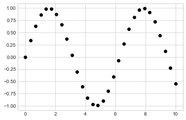
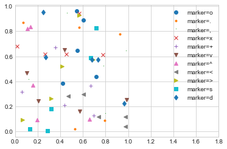
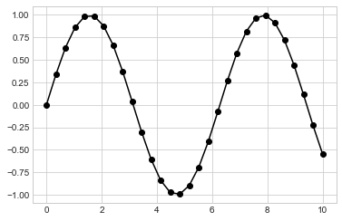
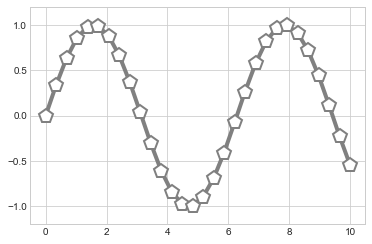
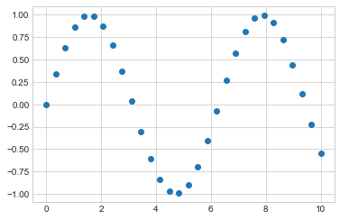
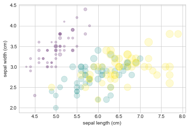

Simple Scatter Plots
Contents
5. Simple Scatter Plots¶
%matplotlib inline
import matplotlib.pyplot as plt
plt.style.use('seaborn-whitegrid')
import numpy as np
5.1. 用 plt.plot 畫散布圖¶
作法和剛剛的線圖幾乎一樣
x = np.linspace(0, 10, 30)
y = np.sin(x)
plt.plot(x, y, 'o', color='black');

第三個參數是用來表示繪圖時的形狀。寫 ‘o’ 就是點圖，如果寫 “-“，就會變線圖
至於有多少 marker 可以用，可以查
plt.plot或 Matplotlib的說明文件這邊舉例如下：
rng = np.random.RandomState(0)
for marker in ['o', '.', ',', 'x', '+', 'v', '^', '<', '>', 's', 'd']:
plt.plot(rng.rand(5), rng.rand(5), marker,
label= f"marker={marker}")
plt.legend(numpoints=1)
plt.xlim(0, 1.8);

我們可以在 marker 的地方，一次定義多個特性(我要線條(-), 點(o), 以及黑色 (k))
plt.plot(x, y, '-ok'); # line (-), circle marker (o), black (k)

還有一些額外的參數，可以做更多的設定：
plt.plot(x, y, '-p', color='gray',
markersize=15, linewidth=4,
markerfacecolor='white',
markeredgecolor='gray',
markeredgewidth=2)
plt.ylim(-1.2, 1.2);

5.2. 用 plt.scatter 畫散布圖¶
另一種畫散布圖的方式是
plt.scatter，語法幾乎一樣：
plt.scatter(x, y, marker='o');

那，
plt.plot()和plt.scatter()差在哪？ 差在，plt.scatter()可以控制 “每一個點” 屬性(大小, 顏色, 框線…)例如下例，我要畫 100 個點，然後我想要讓這 100 個點的大小和顏色都不同：
rng = np.random.RandomState(0);
# 生出 100 個 (x, y)
x = rng.randn(100)
y = rng.randn(100)
# 定義 100 個點各自的顏色和大小
colors = rng.rand(100)
sizes = 1000 * rng.rand(100)
# 畫圖，而且 mapping 每個點的屬性
plt.scatter(x, y,
c=colors,
s=sizes,
alpha=0.3,
cmap='viridis')
plt.colorbar(); # show color scale
/var/folders/j9/71c8r2vs343cb9329xbww0240000gn/T/ipykernel_43308/448753288.py:17: MatplotlibDeprecationWarning: Auto-removal of grids by pcolor() and pcolormesh() is deprecated since 3.5 and will be removed two minor releases later; please call grid(False) first.
plt.colorbar(); # show color scale
再來，看一個統計畫圖常用的技巧，除了 (x,y) 描點外，點的大小 depend on 某個連續變數，點的顏色 depend on 某個類別變數.
用 iris data 來當例子
from sklearn.datasets import load_iris
iris = load_iris()
features = iris.data.T #四個變數
iris.feature_names
['sepal length (cm)',
'sepal width (cm)',
'petal length (cm)',
'petal width (cm)']
feature的部分，有上面這四個，所以我想用
features[0](sepal length，花萼長度) 和features[1](sepal width，花萼寬度) 來描點點的大小用
features[2](petal length，花瓣長度)點的顏色，用 response variable : iris.target (花的種類)
plt.scatter(features[0],
features[1],
alpha=0.2,
s=100*features[3],
c=iris.target,
cmap='viridis')
plt.xlabel(iris.feature_names[0])
plt.ylabel(iris.feature_names[1]);

5.3. plt.plot() 和 plt.scatter() 的使用時機¶
plt.scatter()可以做比較多客製化，但缺點是，資料量大的時候效率不佳(因為為了達到每個點的設定，背後多做很多事).所以，資料量小的時候(幾百個點)，可以善用
plt.scatter()，但資料量大時，就用plt.plot()比較有效率